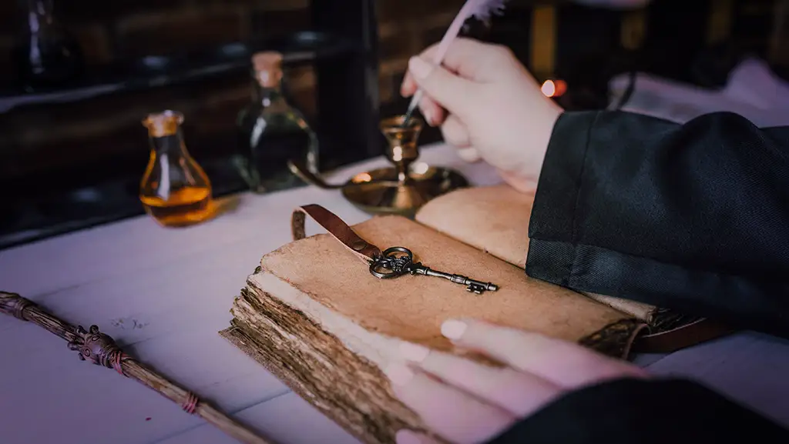

Introduction
Welcome to Arcana and Glass!

Hello, I’m Livadi, the local apothecary here at the Elderbough Province. We at Arcana and Glass focus not only on the creation of the mysterious healing and monstrous results, but also on the very essence of the storytelling behind each of our bottles of wonder. Take a look at our shelves and you’ll find not only a magical substance worthy of curing whatever ailment or desire you may need, but the stories behind them to prove it. Follow our crew, consisting of our huntress, cartographer, beast-mediator, and other specialists in each narrative showing the magical past behind our brews. You won’t be disappointed!
You Can Count on Us For...
- Fair Pricing
- Accurate Histories and Side Effects
- Almost no Slugs
The Main 3 Ingredients in Our Potions:
- Safety Precaution Spells
- Allergen Protection
- A Hint of Spark for Color
Other Non-Magical Ingredients Often Used in our Safe Brews
- Chamomile
- An annual plant, often sought after for its soothing and calming effects.
- Ginger Root
- Reed-like plant with leafy stems. Used for a spicy, flavorful addition and intoxicating fragrance.
- Guayusa
- Caffinated evergreen sprig traditionally used for its stimilating effects. Adds an earthy, woodsy taste with a touch of sweetness.
- Hibiscus
- Hibiscus flowers are used as an additional flavor, with a fruity smell and a sour, berry-like taste.
- Peppermint
- Used for its sharp, yet calming aroma, and added as a mask for the less savory flavors in some other potions.
For more information on our natural ingredients incorporated, visit artoftea.com
Keep an eye out for us as we bulid our shop on Etsy